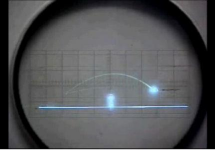
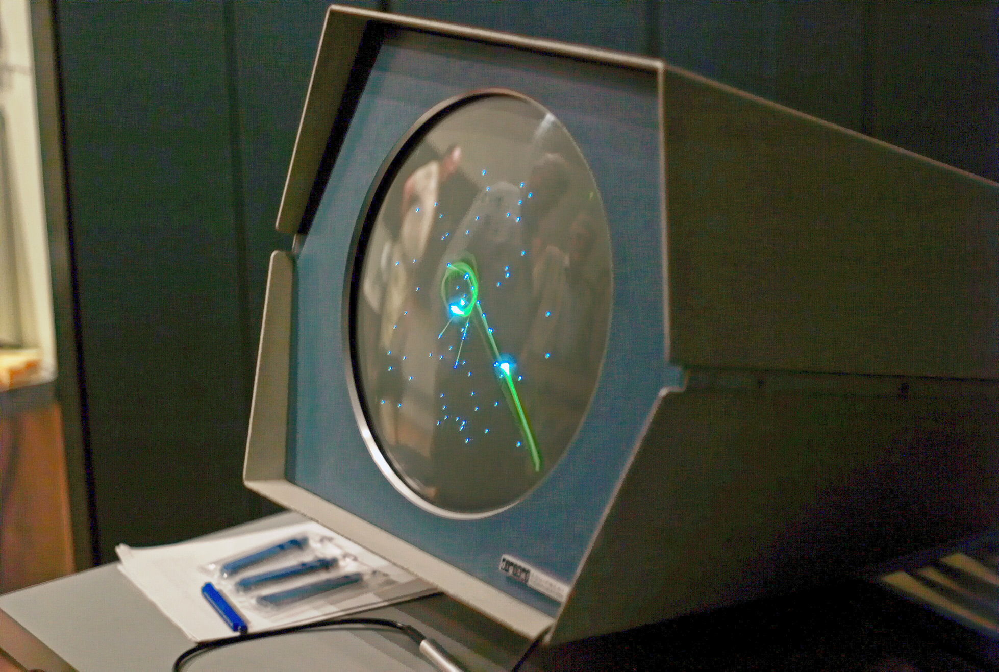
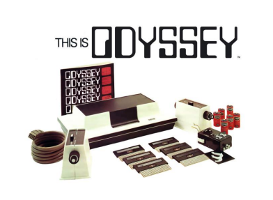
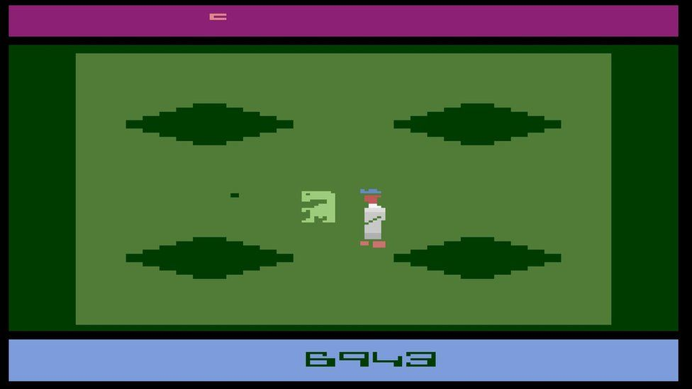
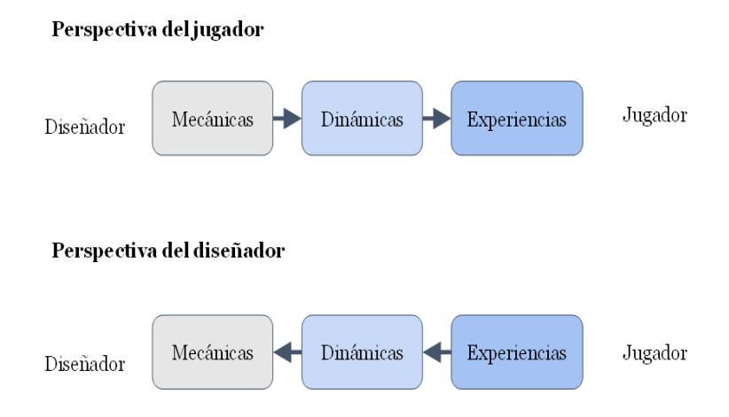

Juego: “Acción libre ejecutada como si y sentida
como situada fuera de la vida corriente, pero que a pesar de todo puede
absorber por completo al jugador”
(Homo Ludens – J Huizinga)
¿Qué caracteriza a un juego?
Objetivo (Proposito)
Reglas: normas que definan la acción y los límites de esta
Retos: Algún tipo de dificultad a superar
Refuerzos y castigos: El jugador debe saber cuando lo hace bien y
cuando mal
Géneros
Igual que en las películas. Juegos que tienen ciertas características
comunes que permite englobarlos en un mismo genero. Jerarquía de
géneros… - Algunos: Plataformas, acción, beat ’m ups, lucha - Tipos de
cámara: primera, tercera, cenital, isométrica, lateral, on-rail….
Historia de los videojuegos
Los inicios
Primer videojuego OXO (1955) => tres en raya
Tennis for two (1958) (Formalmente)

OXO
Spacewar (1962) (en el MIT)
Como podemos ver todo era campo y solo universidades…

Spacewar
Comienzan las consolas
La primera “consola” Magnavox Odyssey (1972)

Magnavox
Atari/Sears Telegames Pong
Color TV-Game (Nintendo) (6 variaciones del tennis)
Segunda generación de
consolas (1977)
Se caracterizan por permitir cartuchos intercambiables
Atari, coleco visión,
Empezó muy bien perooo…
Fuerte Crack de los videojuegos (calidad penosa)

ET
Tercera Generación de
consolas
Nes, Master System
Resurgimiento y aparición de Nintendo con toda su fuerza
Sega comienza también a asomar la patita
PReludio de la guerra de consolas de los 90
NES
Cuarta generación de
consolas (Los 16 Bits)
Hasta ahora los procesadores era de 8 bits.
Ahora surgen procesadores de 16
Pasar de 8 a 16 bits tenía implicaciones. A partir de 32… – Super
Nintendo, Mega Drive (Genesis), Turbografx16, Neo Geo – Máquina arcade
en tu hogar
La era 3D
Primer juego considerado 3D o pseudo 3D: Knight Lore, Spectrum en
perspectiva isométrica 3D (Ultimate => Rare)
Máquinas arcade (Virtua Racing)
Algunos intentos en los 16 bits (V racing, Star Fox)
PC: 1992( ID Software: wolfenstain 3D, DooM) (Pseud0 3D)
El 3D “casi” como lo conocemos
hoy
Quake (1996)
Quake II / Half life
Playstation (1995), Sega Saturn (1994) Nintendo 64 (1996) (32
Bits*)
Aparición de las aceleradoras gráficas (3DFX, Nvidia TNT) => GPUS
(Gfoce 256)
Shaders programables
Consolas con shaders
programables
Xbox (SD)
Xbox 360 (HD)
PS3 (HD)
Las modernas
Juego en red y detección
de movimiento
Pionero el PC (DooM)
Primera consola Dreamcast, Xbox y luego PS2.
Nace el concepto de E-Sport (Blizzard con Starcraft 1998)
Wii, Kinect, Move, sensores…
En la actualidad
VR
Nube
Plataformas digitales (Steam)
Roles en el desarrollo de juegos:
3 perfiles básicos y
multiples adicionales
Diseñador
Programador
Artista
Game Designer
Es el encargado de diseñar la experiencia de juego
Describe las reglas
La lógica
Narrativa
Ambientación
Habilidades de un diseñador
Capacidad de comunicación
Buena comunicación escrita
Conocimientos informáticos. Cuantos más mejor.
Conocimientos de hardware
Nociones de arte
Inglés.
Algunos Diseñadores Famosos.
Miyamoto (Nintendo)
Peter Molyneux (Microsoft, Lionhead Studios, Bullfrog)
Ken Levine (Irrational games)
American McGee (ID software)
Jonh Romero (ID Software)
Hideo Kojima (Konami)
¿Conocéis algunos más
vosotros?
Tarea para casa, buscar un diseñador de vuestro juego favorito y el
próximo día lo comentamos
Elementos formales del diseño de videojuegos
Información disponible
Publica
Oculta
Privada
Privilegiada
Compartida
Conceptos
Recursos: Vida, munición, moneda
Objetivos: Salvar a la princesa en Mario (puede haber
secundarios)
Ambientación: entorno donde se juega.
Avatar: el representante virtual del jugador en el juego.
Reglas: conjunto de posibilidades de interacción de los jugadores
con el juego (implícitas y explicitas)
Modelo MDA
Mecánicas: acciones que el jugador puede llevar a cabo en el
juego
Dinámicas: resultado de combinar diferentes mecánicas
(Estrategias)
Experiencias (Aesthetics): la sensaciones que el jugador experimenta
al jugar
MDA según la perspectiva

MDA
Documentos de Diseño
Documento de concepto (a veces llamado Pitch)
EL GDD (Game Design Document)
No tiene porqué ser un único documento (Wiki por ejemplo)
Objetivo: Tener una descripción con el suficiente grado de detalle
como para permitir una implementación
GDD detallista
A favor:
Permite separar la especificación de la implementación
Permite que la validación final tenga sentido
Encuentra alguno de los problemas anticipadamente
En contra:
Trabajar en el ‘aire’ significa tirar trabajo
Documentos des-actualizados
Implementación menos flexible
Feedback
El jugador necesita retroalimentación - Para saber qué acción ha
realizado - Para saber si la acción realizada ha tenido alguna
consecuencia - Para saber si la consecuencia ha sido positiva o
negativa
Cuidado: Si una acción no genera un feedback
relevante la primera vez que se usa. El jugador aprenderá a que hacer
esa acción es irrelevante
El feedback debe ser gratificante, espectacular, vistoso, que suene
bien, que te sirva para el futuro…
Core loop
Es el conjunto de mecánicas que el jugador debe repetir una y otra
vez
” Este juego es en el que tienes que… ”
Es lo primero que debe funcionar y la base para que el juego sea
bueno.
Loops de feedback
Positivos: Potencian el feedback positivo (Permiten progresión pero
cuidado porque pueden hacerse muy chetos)
Negativos: Penalizan la progresión (Pueden percibirse como injustos,
pero mantienen la progresión equilibrada)